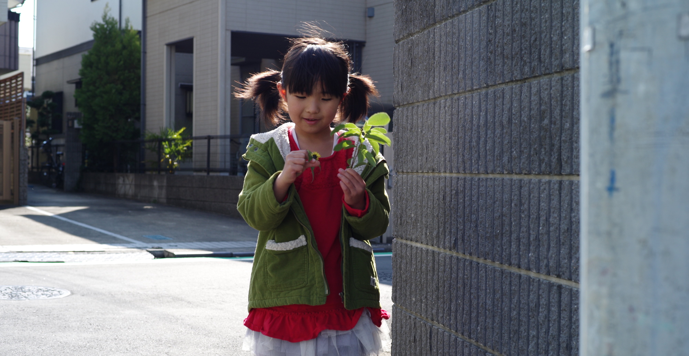

Willing to

私は５才と１才の子を持つ二人の子供を持つ母親です。
今しかないこの時に身につけた特技は優先順位づけのスピード、そして頭の切り替えです。
時間は有限なのでマルチタスクに多くの事を経験して将来世代に残したいです。

プログラミングの魅力は不便な事を便利にする事だと考えます。
未就学児の母親であるという当事者である間に感じた不便を、プログラミングを使って便利にし、
体験価値を届けられるようなエンジニアになりたいです。
日々進化し続ける技術をキャッチアップするための研鑽はもちろんのこと、
クライアントの悩みや課題を解決できるよう、クライアントの目線を培っていく必要があります。
時代に合わせた技術を追いかけつつ、クライアントに寄り添ったエンジニアリングができるよう、心がけていきます。